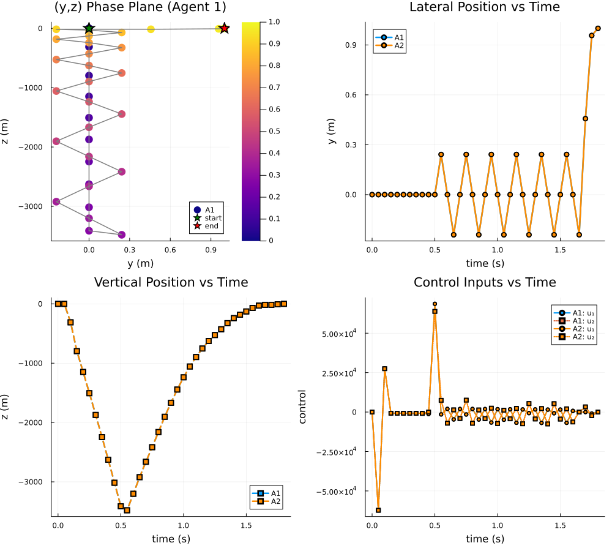

Multi-Agent Target Tracking via a Time-Expanded Cellular Sheaf
This version encodes dynamics and coordination directly in one sheaf. Each vertex is one agent or one target at one time step.
For agents, the stalk is augmented as
\[z_{i,t} = \begin{bmatrix} x_{i,t} \\ u_{i,t} \end{bmatrix} \in \mathbb{R}^{n_x+n_u}, \qquad x_{i,t+1} = A_d x_{i,t} + B_d u_{i,t}.\]
Edge families:
- Temporal edges
agent(i,t) ↔ agent(i,t+1)encode dynamics. - Temporal edges
target(j,t) ↔ target(j,t+1)encode target evolution. - In-time edges
agent(i,t) ↔ agent(i',t)encode consensus (position match). - In-time edges
agent(i,t) ↔ target(assign(i),t)encode tracking/pinning.
Targets are modeled with the same augmented quadrotor stalks as agents so that the tracking problem is feasible under the same sampled dynamics.
using CellularSheaves
using CellularSheaves.TrajectorySheaves: continuous_to_discrete_zoh
using LinearAlgebra
using BlockArrays
using PlotsStep 1: Single-agent dynamics (planar quadrotor)
g = 9.81
m_veh = 0.5
I_quad = 0.01
ell = 0.25
Ac = [0.0 0.0 0.0 1.0 0.0 0.0;
0.0 0.0 0.0 0.0 1.0 0.0;
0.0 0.0 0.0 0.0 0.0 1.0;
0.0 0.0 -g 0.0 0.0 0.0;
0.0 0.0 0.0 0.0 0.0 0.0;
0.0 0.0 0.0 0.0 0.0 0.0]
Bc = [0.0 0.0;
0.0 0.0;
0.0 0.0;
0.0 0.0;
1.0 / m_veh 1.0 / m_veh;
ell / (2I_quad) -ell / (2I_quad)]
h = 0.05
Ad, Bd = continuous_to_discrete_zoh(Ac, Bc, h)
nx = size(Ad, 1)
nu = size(Bd, 2)
npos = 2 # use (y,z) for consensus and pinning
function selector_matrix(state_indices::AbstractVector{<:Integer}, full_dim::Int)
@assert all(1 .<= state_indices .<= full_dim)
selector = zeros(Float64, length(state_indices), full_dim)
for (row, col) in enumerate(state_indices)
selector[row, col] = 1.0
end
return selector
endselector_matrix (generic function with 1 method)Step 2: Time-expanded multi-agent sheaf construction
"""
build_time_expanded_tracking_sheaf(
n_agents, n_targets, k, Ad, Bd;
agent_edges, assignment,
target_transition, consensus_weight, pinning_weight)
Construct a sheaf whose vertices are `(entity, time)` pairs.
- Agent stalk dimension: `nx + nu` (state + control).
- Target stalk dimension: `nx + nu` (state + control).
"""
function build_time_expanded_tracking_sheaf(
n_agents::Int,
n_targets::Int,
k::Int,
Ad::AbstractMatrix,
Bd::AbstractMatrix;
agent_edges::Vector{Tuple{Int,Int}},
assignment::Vector{Int},
agent_consensus_states::AbstractVector{<:Integer},
target_pinning_states::AbstractVector{<:Integer},
consensus_weight::Float64=1.0,
pinning_weight::Float64=5.0,
)
nx = size(Ad, 1)
nu = size(Bd, 2)
nt = nx + nu
n_per_t = n_agents + n_targets
n_vertices = (k + 1) * n_per_t
vertex_dims = fill(nt, n_vertices)
function vid_agent(i::Int, t::Int)
return t * n_per_t + i
end
function vid_target(j::Int, t::Int)
return t * n_per_t + n_agents + j
end
for t in 0:k
for i in 1:n_agents
vertex_dims[vid_agent(i, t)] = nx + nu
end
end
sheaf = EuclideanSheaf{Float64}(vertex_dims)
agent_now_map = hcat(Matrix(Ad), Matrix(Bd))
agent_next_map = hcat(Matrix{Float64}(I, nx, nx), zeros(nx, nu))
for t in 0:k-1
for i in 1:n_agents
add_sheaf_edge!(
sheaf,
vid_agent(i, t),
vid_agent(i, t + 1),
agent_now_map,
agent_next_map,
)
end
end
for t in 0:k-1
for j in 1:n_targets
add_sheaf_edge!(
sheaf,
vid_target(j, t),
vid_target(j, t + 1),
agent_now_map,
agent_next_map,
)
end
end
agent_selector = selector_matrix(agent_consensus_states, nx)
target_selector = selector_matrix(target_pinning_states, nt)
P_agent = hcat(agent_selector, zeros(size(agent_selector, 1), nx - size(agent_selector, 2) + nu))
P_target = hcat(target_selector, zeros(size(target_selector, 1), nt - size(target_selector, 2)))
cscale = sqrt(consensus_weight)
pscale = sqrt(pinning_weight)
for t in 0:k
for (i, j) in agent_edges
add_sheaf_edge!(
sheaf,
vid_agent(i, t),
vid_agent(j, t),
cscale * P_agent,
cscale * P_agent,
)
end
end
for t in 0:k
for i in 1:n_agents
j = assignment[i]
add_sheaf_edge!(
sheaf,
vid_agent(i, t),
vid_target(j, t),
pscale * P_agent,
pscale * P_target,
)
end
end
index = (
agent=vid_agent,
target=vid_target,
n_per_t=n_per_t,
nx=nx,
nu=nu,
nt=nt,
)
return sheaf, index
endMain.build_time_expanded_tracking_sheafStep 3: Problem instance
n_agents = 2
n_targets = 2
k = 36
agent_edges = [(1, 2)]
assignment = [1, 2] # agent i tracks target assignment[i]
agent_consensus_states = [1, 2]
target_pinning_states = [1, 2]
sheaf, idx = build_time_expanded_tracking_sheaf(
n_agents,
n_targets,
k,
Ad,
Bd;
agent_edges=agent_edges,
assignment=assignment,
agent_consensus_states=agent_consensus_states,
target_pinning_states=target_pinning_states,
consensus_weight=1.0,
pinning_weight=8.0,
)
println("Vertices: ", length(vertex_stalks(sheaf)))
println("Edges: ", length(edge_stalks(sheaf)))Vertices: 148
Edges: 255Step 4: Boundary data and harmonic extension
We fix initial/final agent states and target endpoints only.
function agent_stalk(x::AbstractVector, u::AbstractVector)
return vcat(Vector{Float64}(x), Vector{Float64}(u))
end
function generate_quadrotor_reference_trajectory(x0::AbstractVector, xk::AbstractVector)
reference_sheaf = EuclideanSheaf{Float64}(fill(nx + nu, k + 1))
reference_now_map = hcat(Matrix(Ad), Matrix(Bd))
reference_next_map = hcat(Matrix{Float64}(I, nx, nx), zeros(nx, nu))
for t in 1:k
add_sheaf_edge!(reference_sheaf, t, t + 1, reference_now_map, reference_next_map)
end
reference_boundary = Dict{Int,Vector{Float64}}(
1 => agent_stalk(x0, zeros(nu)),
k + 1 => agent_stalk(xk, zeros(nu)),
)
reference_path, _ = harmonic_extension(reference_sheaf, reference_boundary)
return [Array(reference_path[Block(t)]) for t in 1:k+1]
end
boundary = Dict{Int,Vector{Float64}}()
x0_a1 = zeros(nx)
xk_a1 = zeros(nx)
xk_a1[1] = 1.0
xk_a1[2] = 0.5
x0_a2 = copy(x0_a1)
xk_a2 = copy(xk_a1)
u0 = zeros(nu)
boundary[idx.agent(1, 0)] = agent_stalk(x0_a1, u0)
boundary[idx.agent(2, 0)] = agent_stalk(x0_a2, u0)
boundary[idx.agent(1, k)] = agent_stalk(xk_a1, u0)
boundary[idx.agent(2, k)] = agent_stalk(xk_a2, u0)
target0 = [
zeros(nx),
zeros(nx),
]
targetk = [
[1.0, 0.5, 0.0, 0.0, 0.0, 0.0],
[1.0, 0.5, 0.0, 0.0, 0.0, 0.0],
]
target_reference = [
generate_quadrotor_reference_trajectory(target0[1], targetk[1]),
generate_quadrotor_reference_trajectory(target0[2], targetk[2]),
]
for j in 1:n_targets
for t in 0:k
boundary[idx.target(j, t)] = target_reference[j][t + 1]
end
end
z_harmonic, null_basis = harmonic_extension(sheaf, boundary)
d = coboundary_map(sheaf)
residual = norm(d * Array(z_harmonic))
println("Harmonic extension residual ||d*z|| = ", residual)
println("Nullspace dimension = ", size(null_basis, 2))Harmonic extension residual ||d*z|| = 1.948821699790103e-6
Nullspace dimension = 0Step 5: Extract trajectories
function unpack_agent_block(v::AbstractVector, nx::Int, nu::Int)
return v[1:nx], v[nx+1:nx+nu]
end
times = h .* (0:k)
y1 = zeros(k + 1)
z1 = zeros(k + 1)
phi1 = zeros(k + 1)
y2 = zeros(k + 1)
z2 = zeros(k + 1)
phi2 = zeros(k + 1)
u11 = zeros(k + 1)
u12 = zeros(k + 1)
u21 = zeros(k + 1)
u22 = zeros(k + 1)
for t in 0:k
b1 = Array(z_harmonic[Block(idx.agent(1, t))])
b2 = Array(z_harmonic[Block(idx.agent(2, t))])
x1, u1 = unpack_agent_block(b1, nx, nu)
x2, u2 = unpack_agent_block(b2, nx, nu)
y1[t + 1] = x1[1]
z1[t + 1] = x1[2]
phi1[t + 1] = x1[3]
y2[t + 1] = x2[1]
z2[t + 1] = x2[2]
phi2[t + 1] = x2[3]
u11[t + 1] = u1[1]
u12[t + 1] = u1[2]
u21[t + 1] = u2[1]
u22[t + 1] = u2[2]
endStep 6: Visualize trajectories in a 2x2 multipanel figure
t_normalized = range(0.0, 1.0; length=k+1)
p_plane = scatter(y1, z1;
marker_z=t_normalized, color=:plasma, colorbar=true,
label="A1", xlabel="y (m)", ylabel="z (m)",
title="(y,z) Phase Plane (Agent 1)",
markerstrokewidth=0, markersize=7)
plot!(p_plane, y1, z1; lw=1.5, color=:gray, label="")
scatter!(p_plane, [y1[1]], [z1[1]]; color=:green, markersize=9, markershape=:star5, label="start")
scatter!(p_plane, [y1[end]], [z1[end]]; color=:red, markersize=9, markershape=:star5, label="end")
p_y = plot(times, y1;
lw=2.5, marker=:circle, label="A1",
xlabel="time (s)", ylabel="y (m)",
title="Lateral Position vs Time",
markersize=4)
plot!(p_y, times, y2; lw=2.5, marker=:circle, color=:darkorange, label="A2", markersize=4)
p_z = plot(times, z1;
lw=2.5, marker=:square, label="A1",
xlabel="time (s)", ylabel="z (m)",
title="Vertical Position vs Time",
markersize=4, linestyle=:dash)
plot!(p_z, times, z2; lw=2.5, marker=:square, color=:darkorange, label="A2", markersize=4, linestyle=:dash)
p_ctrl = plot(times, u11;
lw=2, marker=:circle, label="A1: u₁",
xlabel="time (s)", ylabel="control",
title="Control Inputs vs Time",
markersize=3)
plot!(p_ctrl, times, u12; lw=2, marker=:square, linestyle=:dot, label="A1: u₂", markersize=3)
plot!(p_ctrl, times, u21; lw=2, marker=:circle, color=:darkorange, label="A2: u₁", markersize=3)
plot!(p_ctrl, times, u22; lw=2, marker=:square, color=:darkorange, linestyle=:dot, label="A2: u₂", markersize=3)
plot(p_plane, p_y, p_z, p_ctrl; layout=(2, 2), size=(1000, 900))
Step 7: Check temporal dynamics edges directly
max_dyn_residual = Ref(0.0)
for t in 0:k-1
for i in 1:n_agents
zt = Array(z_harmonic[Block(idx.agent(i, t))])
zt1 = Array(z_harmonic[Block(idx.agent(i, t + 1))])
xt, ut = unpack_agent_block(zt, nx, nu)
xt1, _ = unpack_agent_block(zt1, nx, nu)
r = norm(Ad * xt + Bd * ut - xt1)
max_dyn_residual[] = max(max_dyn_residual[], r)
end
end
println("Max agent dynamics residual = ", max_dyn_residual[])Max agent dynamics residual = 3.0037587155940507e-7Key takeaway
This construction uses one sheaf to encode:
- dynamics (temporal edges),
- agent-agent consensus (in-time edges),
- agent-target tracking (pinning edges).
No direct-sum black-box system is formed; the multi-agent/time structure is explicit in the sheaf topology.